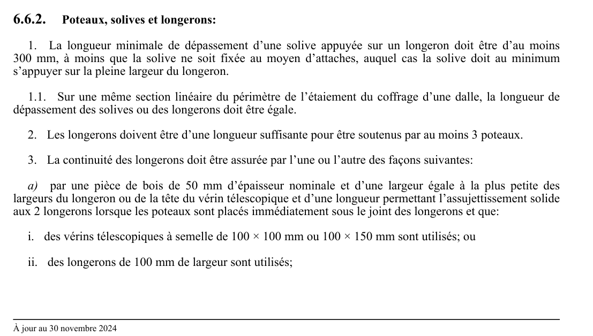

art-6.6.2-CSTC : poteaux, solives et longerons
Poteaux, solives et longerons: 1. La longueur minimale de dépassement d'une solive appuyée sur un longeron doit être d'au moins 300 mm, à moins que la solive ne soit fixée au moyen d'attaches, auquel cas la solive doit au minimum s'appuyer sur la pleine largeur du longeron.
🌐 LegisQuébec · 📄 PDF officiel
Texte officiel
Poteaux, solives et longerons:
1. La longueur minimale de dépassement d’une solive appuyée sur un longeron doit être d’au moins 300 mm, à moins que la solive ne soit fixée au moyen d’attaches, auquel cas la solive doit au minimum s’appuyer sur la pleine largeur du longeron.
1.1. Sur une même section linéaire du périmètre de l’étaiement du coffrage d’une dalle, la longueur de dépassement des solives ou des longerons doit être égale.
2. Les longerons doivent être d’une longueur suffisante pour être soutenus par au moins 3 poteaux.
3. La continuité des longerons doit être assurée par l’une ou l’autre des façons suivantes:
a) par une pièce de bois de 50 mm d’épaisseur nominale et d’une largeur égale à la plus petite des largeurs du longeron ou de la tête du vérin télescopique et d’une longueur permettant l’assujettissement solide aux 2 longerons lorsque les poteaux sont placés immédiatement sous le joint des longerons et que:
i. des vérins télescopiques à semelle de 100 × 100 mm ou 100 × 150 mm sont utilisés; ou
ii. des longerons de 100 mm de largeur sont utilisés;
b) par une pièce de même section que celle des longerons clouée à ceux-ci et de longueur suffisante pour être supportée par au moins 2 poteaux lorsque les poteaux sont placés de chaque côté du joint mais non à l’extrémité des longerons;
c) par la semelle du vérin télescopique si ses dimensions sont suffisantes pour le faire, soit lorsque:
i. des vérins télescopiques à semelle de 100 × 200 mm sont utilisés;
ii. des longerons de 100 × 100 mm sont utilisés; et
iii. les poteaux sont placés immédiatement sous le joint des longerons.
4. Les poteaux doivent être fixés, puis appuyés et liés solidement à chaque extrémité.
5. Les coffrages des poutres en béton armé doivent être soutenus par au moins 2 rangées de poteaux.
Texte de l’article 6.6.2 CSTC, extrait de la couche texte du PDF officiel (page 138), sans OCR ni retouche. La capture ci-dessous et le PDF font foi.
{kind=link}

Toucher l'image pour l'agrandir🔗 CSTC.pdf : page 138 · texte à jour au 30 novembre 2024
📚 Source légale : R.R.Q., 1981, c. S-2.1, r. 6, a. 6.6.2; D. 1413-98, a. 27. · LégisQuébec
Voir aussi
- art. 6.6.1
- ⚖️ Loi habilitante : LSST
- ↑ Section 6 : Étaiement des coffrages à béton
Pages qui pointent ici (2)
- art-6.6.1-CSTC : les vérins télescopiques en acier, les étais Recueil législatif
- CSTC : Section 6 : Étaiement des coffrages à béton Recueil législatif